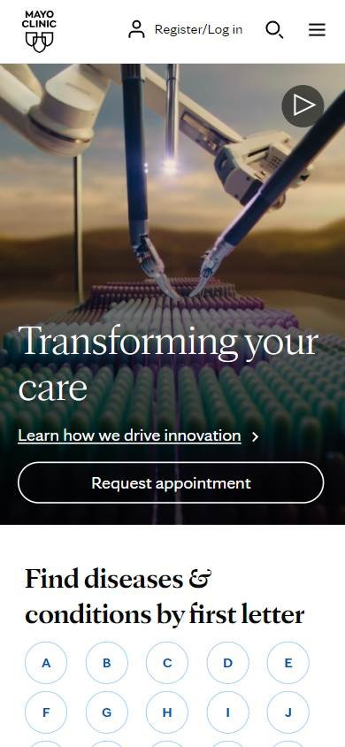
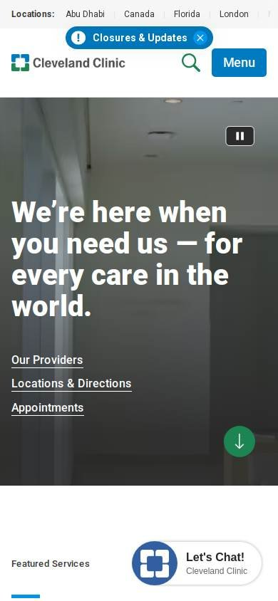
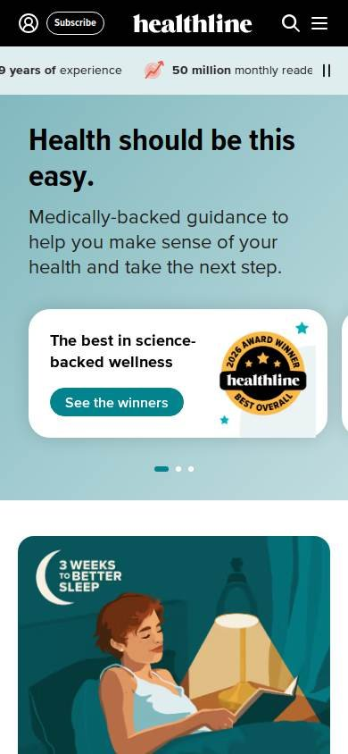

Salud
Los seleccionados
Los tres sitios más visitados de Estados Unidos, según estadísticas de tráfico.
En resumen: lo que hacen los líderes
La pantalla de inicio de cada uno



Estilo visual
Colores, imágenes, tipografía y cuánta información muestran.
Tu estilo visual debería…
- Colores calmos (azul, verde) y mucho aire.
- Una imagen o video grande con un titular corto y cálido.
Lo que tienen en común: Paletas calmas (azul, verde), mucho aire e imágenes grandes o en video que transmiten confianza.
La paleta de cada uno
Medida sobre la primera pantalla. Los colores de marca salen del header; el resto muestra cuánto espacio ocupa cada color.
Así lo resuelve cada uno
Ficha comparativa
| Aspecto | Mayo Clinic | Cleveland Clinic | Healthline |
|---|---|---|---|
| Paleta | Acotada: blanco + azul + amarillo de aviso | Acotada: blanco + verde y azul | Acotada: negro + verde azulado |
| Imágenes | Video a todo el ancho | Video a todo el ancho | Ilustraciones en tarjetas |
| Tipografía | Serifa en el titular | Sin serifa, titular grande | Sin serifa, titular grande |
| Densidad | Baja | Baja | Media |
Header
La franja de arriba con el logo y los accesos.
Tu header debería…
- Logo a la izquierda y secciones según lo que busca el paciente (médicos, ubicaciones, servicios).
- Un botón de color para la acción principal: pedir turno.
Lo que tienen en común: Header limpio con el logo a la izquierda, secciones por necesidad del paciente y una acción destacada para pedir turno o suscribirse.
Así lo resuelve cada uno
Ficha comparativa
| Aspecto | Mayo Clinic | Cleveland Clinic | Healthline |
|---|---|---|---|
| Fondo | Blanco | Blanco | Negro |
| LogoIgual en todos | A la izquierda | A la izquierda | A la izquierda |
| Secciones | Atención, Biblioteca de salud, Profesionales | Encontrá un médico, Ubicaciones, Servicios | Condiciones, Bienestar, Medicamentos |
| Acción destacada | «Request appointment» | Botón azul «Appointments» | «Subscribe» |
Primera pantalla
Lo primero que se ve debajo del header.
Tu primera pantalla debería…
- Imagen o video a todo el ancho con un titular corto y cálido.
- Acceso directo a pedir turno y a encontrar profesionales en la primera pantalla.
Lo que tienen en común: Imagen o video grande con un titular corto y cercano. La acción de pedir turno aparece en la primera pantalla.
Así lo resuelve cada uno
Ficha comparativa
| Aspecto | Mayo Clinic | Cleveland Clinic | Healthline |
|---|---|---|---|
| Formato | Video o foto a todo el ancho + titular | Video a todo el ancho + titular | Título centrado + 3 tarjetas |
| Tono del titular | Institucional («Transforming your care») | Cercano («We're here when you need us») | Simple («Health should be this easy») |
| Botón | «Request appointment» con borde | Enlaces de texto | Botones verdes en tarjetas |